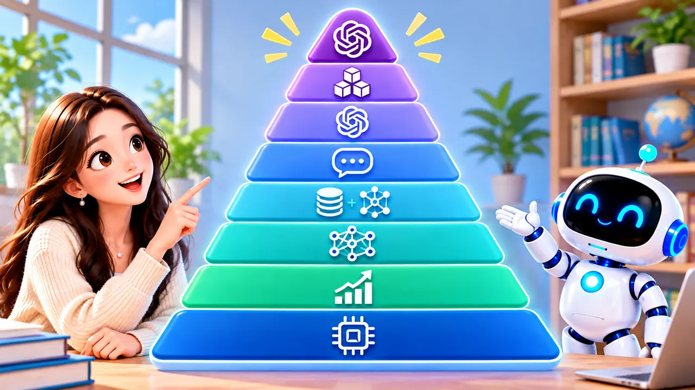
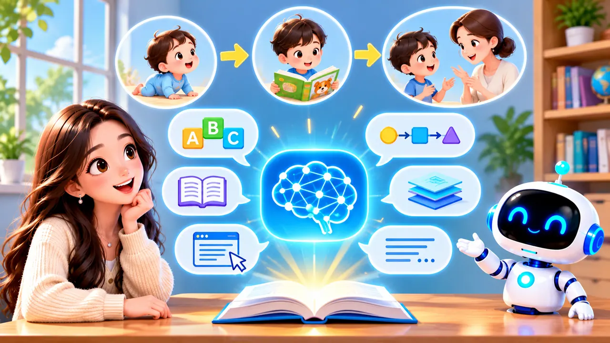
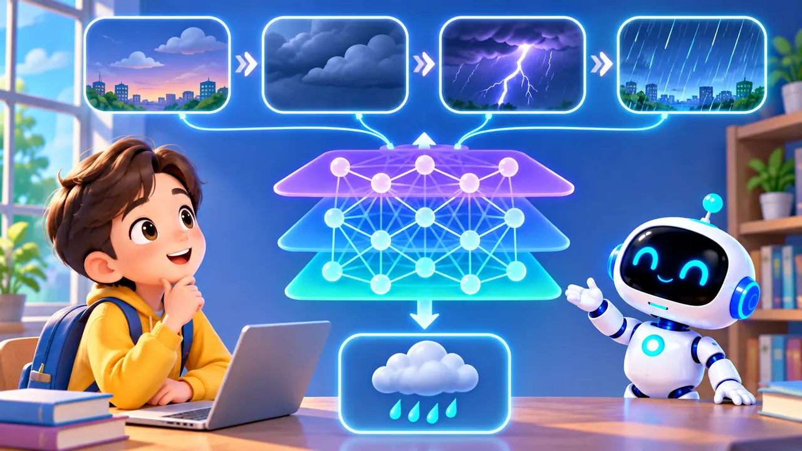
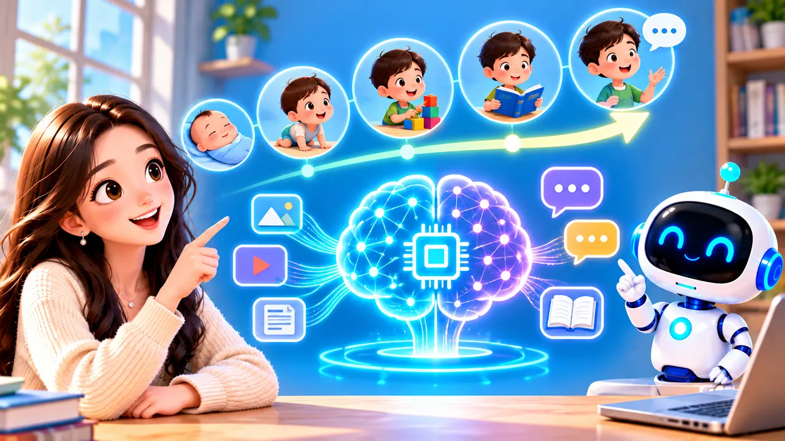
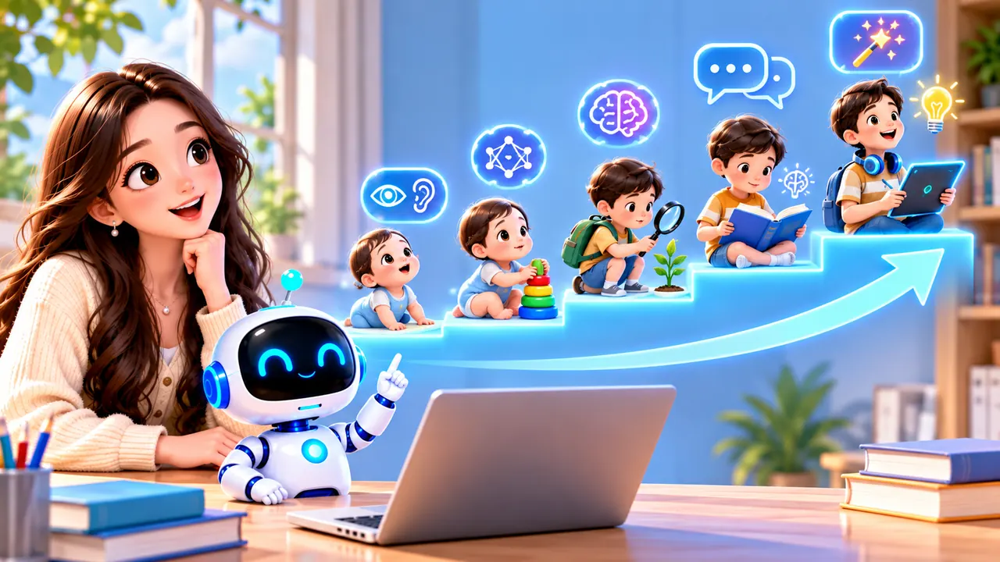
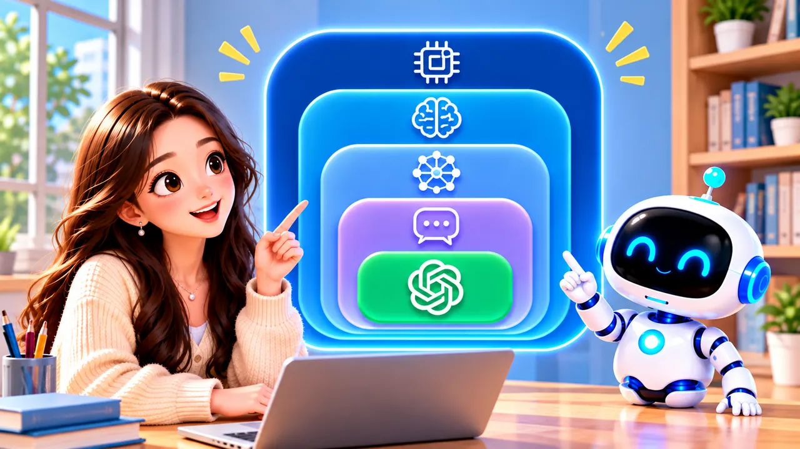

Welcome to Episode 3 of AI Knowledge Class. In Episodes 1 and 2 you met what AI is, and how traditional AI differs from generative AI. Today we go one step deeper: how did tools like ChatGPT learn to hold a conversation with us?

We will not start with a wall of technical terms. Instead we use something familiar — how a child’s brain slowly learns about the world — to map how AI technologies relate. Each picture sits beside the idea it explains.
Your job is not to memorize every label today. Your job is to see which layer sits under which, so names like GPT and ChatGPT stop feeling random.
Episode 2 ended with a teaser about this family tree. Today we connect those loose names into one story you can retell without a textbook.
A child learns the world (analogy only)
Picture a newborn: no speeches yet, no diary of “what I learned today.” Still, the world is already arriving — faces, sounds, warmth, routines.
He sees people and objects, hears voices, feels different rooms. Long before formal lessons, experience is already teaching — quietly, through repetition.

Over time the child notices patterns: this face is Mom, this bottle often means feeding time, that voice belongs to someone who cares. No one hands them a rulebook for every moment — they pick up regularities from experience.
That is our picture for machine learning (ML): computers learn patterns from large amounts of data instead of a programmer typing every rule by hand.
Spam filters, song recommendations, and “people also bought” suggestions often start here: the system watched millions of examples, then guesses what fits a new case.
Deep learning: trickier patterns
As the child grows, single clues are not enough. Dark sky, thunder, then rain — linked patterns, not isolated facts.

Deep learning uses richer neural networks to learn more complex relationships from huge datasets. In plain words: machine learning teaches AI to learn; deep learning teaches AI to learn harder patterns.
Face unlock on a phone, voice tags in a video app, or finding odd pixels in a medical scan often lean on deep learning under the hood — even when the screen looks simple.
So in one sentence for your notes: machine learning learns; deep learning learns tougher patterns. Both sit under the big umbrella we still call AI.
Large language models: learning to talk
Learning patterns in the world is not the same as holding a conversation. The child eventually picks up words — Mama, water, “I’m hungry” — and starts both understanding and speaking.

AI has a similar milestone: the large language model (LLM). Think of it as a big model trained mostly on language — sentences, paragraphs, context, style — so it can read what you type and answer in words.
Deep learning gave AI stronger learning muscles; LLMs gave AI a shared language with us. That is why chat tools feel different from a map that only predicts traffic minutes.
An LLM studies words, sentences, and context — tone, follow-ups, what usually comes next. It is trained to read your message and reply in human language, not only to label a photo or score a risk.
From here on, many names you hear (LLM, GPT, chat apps) are about this language layer — built on top of everything below.
Generative AI and GPT
A child who can talk does not only repeat parents word for word. Eventually they tell stories, crack jokes, and combine ideas in new ways.
When AI not only understands language but also creates new text (or other media) from your request, we call it generative AI. You hear GPT a lot because the G stands for Generative — models built to produce fresh wording from what you asked.
Ask for a story, a math explanation, or draft email help — GPT-style models try to generate answers that fit. They can still be wrong; you still check, like Episode 1 reminded you.
That step — from understanding words to making new words — is why Episode 2’s “generative AI” label finally clicks into this family tree.
Versions keep improving
A child who learned to talk keeps learning new words, jokes, and subjects. AI models follow the same rhythm: train, release, improve, repeat.

Learning does not freeze at age six — or at “GPT‑3.” Model families like GPT gain new versions, better data, and safer behavior over time. Names on a blog post may refer to a whole family or one specific release.
When a company says “our latest model,” they might mean an engine swap behind the same app icon you already use — another reason to separate product from model.
Headlines that say “GPT‑5” or “new Claude” might mean a whole family or one dated release. When in doubt, ask: is this the app I tap, or the engine inside it?
The AI technology pyramid
Now stack everything into one pyramid: wider and more basic at the bottom, narrower and closer to daily life at the top.

From bottom to top: AI → machine learning → deep learning → foundation models → LLM → GPT (a model family) → specific model versions → ChatGPT, the product many people open in a browser.
You do not need to chant the whole list on exams. You need the relationships: each level supports the one above. ChatGPT is the tip you see; underneath is a tower of techniques that took years to build.
If a friend asks “Is ChatGPT the same as AI?” you can say: ChatGPT is one product at the top; AI is the whole mountain underneath — learning, deep networks, language models, and more.
Coming up next
Remember the child story one last time: sense patterns, learn harder links, learn language, then create with language — always still learning. AI’s road rhymes with that shape, even though machines are not human.

When you use ChatGPT, you are standing on the top step of a very tall staircase of math, data, and engineering. Knowing the stack helps you ask better questions about what it can and cannot do.
Quick recap: patterns (ML) → harder patterns (deep learning) → language (LLM) → new text (generative / GPT) → apps like ChatGPT. Same order as the child story — but machines are not human.
Next episode: who builds all these models? What roles do OpenAI, Google, Meta, and other labs play? We meet the “creators” behind the names you hear in the news.
See you in Episode 4.